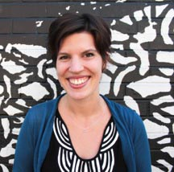
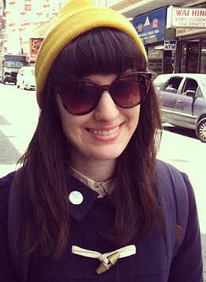

GERALD RICHARDS is the Chief Executive Officer of 826 National. With twenty years of management and development experience at national nonprofit organizations, including the Network for Teaching Entrepreneurship where he served as the Executive Director of the Bay Area office, Gerald is a respected trainer and sought after speaker on topics of youth and education access. He is interviewed regularly on these topics and has appeared on NBC’s Nightly News with Brian Williams, CNN’s Anderson Cooper’s 360, and The Michael Eric Dyson Show, as well as in articles in publications including The San Francisco Examiner and Inc. Magazine. He has also served as an education expert for national marketing campaigns promoting creativity in and outside the classroom. In 2008, he was named one of 101 African-American Champions for Youth in the Bay Area.
Gerald has conducted trainings and presented at conferences including the National Conference on Student Assessment, The Power of Youth Entrepreneurship at Stanford University, Craigslist Foundation’s Nonprofit Boot Camp, and the CA/NFTE Entrepreneurship BizCamp, and represented 826 National at the Clinton Global Initiative’s 2011 Annual Conference, the 2011 PSFK Conference, the 2011 Big Ideas Fest, and the Rhode Island School of Design.
His nonprofit career also includes positions with the United Negro College Fund; University of California, San Francisco; the J. David Gladstone Institutes; Chicago Panel on Social Policy; and The Cradle Foundation. He has managed flourishing relationships and partnerships with corporate, foundation, education and governmental entities including Citi, Merrill Lynch/Bank of America, the Lyles Center for Entrepreneurship at Fresno State, and the San Francisco Mayor’s Office. He is currently a member of the Council of Chief State School Officers (CCSSO) and Ed Steps Curiosity and Creativity workgroup in Washington, D.C.; an inaugural fellow in the California Leaders of Color Fellowship Program; and was a member of the 2009 class of Leadership San Francisco. He currently serves on the boards of the International Development Exchange (IDEX), Mission SF Community Financial Center, and the Woodland School, and previously served on the boards of Juma Ventures and KIPP SF Bay Academy.
Mr. Richards has a BA in Film Studies from Wesleyan University and an MFA in Writing from the School of the Art Institute of Chicago.

MAGGIE ANDREWS is the Director of Development at 826 National. With more than a decade of fundraising experience, her work with youth focused arts organizations has taken her to Baltimore, Boston, and since 2009, the Bay Area. Before her current position with 826 National, Maggie served as the Managing Director, Individual Giving at Teach For America and Development Director for Stanford Jazz Workshop. While working at NPR’s From the Top, Maggie acquired her MS in Arts Administration at Boston University, and she has a BA in English from Dickinson College. Maggie first became involved with the 826 family as an after-school tutor at 826 Boston.
LAUREN BRODER, PH.D. is the Director of Research and Evaluation for 826 National. Lauren received her Ph.D. in Developmental Psychology from the University of Connecticut where she conducted research on the effects of early childhood experiences on later development. She brings a strong background in statistical analysis, research writing, and data management, including working with national data from the NICHD. Lauren also served as a lab manager at the University of Colorado, overseeing multiple projects while managing research assistants. In addition to her research experience, she taught at the collegiate level for five years on a variety of topics — from developmental psychology to statistics. She was also a coordinator and trainer for a research methods course, assisting graduate students in effective teaching strategies. During this time, she realized her passion for inspiring and motivating students.
In addition to her Ph.D. in Developmental Psychology, Lauren holds a B.A. in Psychology from the University of Colorado, and a M.A. in Psychology from the University of Connecticut.
KAIT STEELE is the Director of Field Operations for 826 National. Kait was a founding member of 826CHI, serving as the organization’s first Programs Coordinator and later as its Director of Education. During her seven-year tenure in Chicago, Kait played a key role in program and curriculum development, some of which is featured in the 826 National publication Don’t Forget to Write. Prior to joining the 826 community, Kait taught creative writing and wrote development and communications materials at the Woodstock School located in the foothills of the Indian Himalayas. Kait holds a BA in English/Creative Writing from Northwestern University with an emphasis in poetry.

LINDSEY BOURNE is 826 National’s Finance and Communications Manager. Originally from Cleveland, OH, Lindsey pursued her undergraduate degree at Elon University in North Carolina, where she studied Finance and Spanish. After graduating, she worked for Cambridge Associates in Washington, DC, first in financial reporting and later transitioned to hedge fund research. Outside of work, Lindsey was a volunteer teacher for under-resourced students as part of an inner city, after-school program. Inspired by these students and the program, she left Cambridge to pursue a career in nonprofit education work. Before moving to California, Lindsey spent three months traveling in Southeast Asia, where she volunteered with students in schools throughout the region.

COOPER DINNING is the Salesforce Administrator and Development Assistant for 826 National. Cooper received his undergraduate and graduate degrees, along with his teaching credential, from the University of California, Berkeley. Serving as an elementary school teacher for three years, Cooper soon discovered 826 Valencia, an organization that shared his passion for education and creative writing. He interned with the Development Team and assisted in field trips and after-school tutoring at 826 Valencia before joining the National team.
ANNA GROSS is the Field Operations Associate for 826 National. Anna comes to the Bay Area with two years of dedicated service in the spy supply industry as the Store Supervisor for 826CHI. Beyond her specialized training in cryptography and pigeon care, Anna has spent time writing for The Onion’s A.V. Club and Hyde Park Art Center, while moonlighting as a Box Office Representative for The Second City. When she's not aimlessly navigating San Francisco’s public transit system, you can find Anna toiling away with an X-Acto Knife, glue stick, and endless scraps of cardstock.
DANIEL J. CESCA is 826 National’s Operations Assistant. He is a graduate of the Iowa Writers’ Workshop, where he studied fiction and taught undergraduate creative writing courses. After earning his MFA, he taught as an adjunct professor at the University of Iowa, and served as the Writer’in-Residence at Iowa Lakeside Laboratory, one of the oldest biological field stations in the country. While there he taught nature and writing classes to visiting high school students, and worked on his novel. Originally from Oregon, Daniel has lived in Mexico, where he helped launch an English language program for middle school students outside Puerto Vallarta. Before that he helped run the Campus Services department for several years at the Rudolf Steiner College, a teacher training college located in Fair Oaks, California.